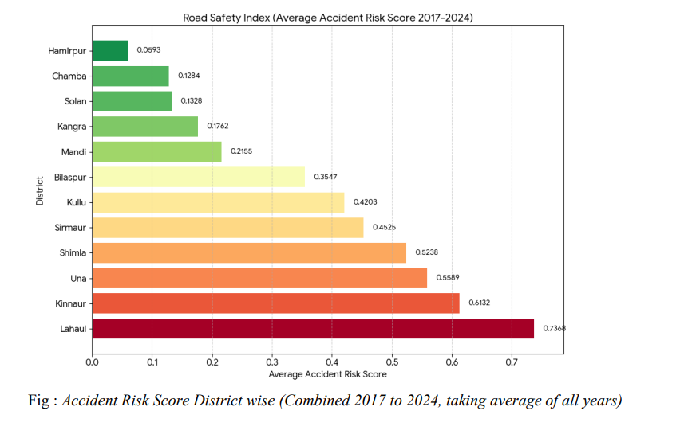
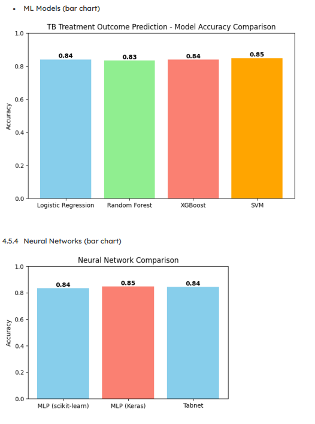

About
I work across data science, machine learning, and bioinformatics, with a focus on turning applied mathematics into models that hold up on real, messy data. Recent projects include disease-outcome prediction, infrastructure risk forecasting, financial risk modeling, and benchmarking of bioinformatics detection tools.
My approach favors mathematical structure — optimization, stochastic models, differential equations — over black-box methods where interpretability matters. I also build interactive tools that make the underlying analysis and results easy to inspect and reproduce.
Projects
8 Projects, 2024 – 2026
Interactive site comparing low-complexity region detection across 8 tools and 13 configurations, with a generated report of figures.

First-principles UAV pathfinding engine — kinematics, collision detection, and trajectory optimization without an external physics library.

Composite risk index for Himachal Pradesh districts from accident and landslide data, with ML models forecasting safety trends.

Compatibility engine using the Hungarian Method on a custom survey instrument converted into a numerical trait matrix.

ML and neural network models predicting tuberculosis treatment outcomes, benchmarked across five model families.

Simulates joint stock-return dependencies with Gaussian, Student's t, and Vine copulas, with tail-risk diagnostics.


Skills
Programming
Python (Pandas, NumPy, Matplotlib), SQL, C, Java
Data Skills
EDA, Data Cleaning, Visualization, ML Modeling
Tools
Colab Notebook, Git, Excel, MySQL
Math & Stats
MATLAB, R, Wolfram Mathematica
Languages
Hindi (Native), English (Bilingual)
Certifications
Experience
Focused on Bioinformatics; developed a benchmarking tool for Low Complexity Regions (LCRs).
Contributed to incubator operations, program coordination, and operational workflow management.
Contributed to social media management, website updates, report preparation, and sheet design for the incubator's operations.
Worked to bridge educational gaps for students in underprivileged communities and helped set up a weekly library.